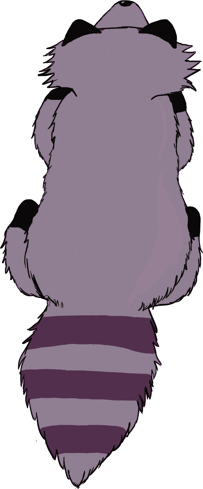

UN JUEGO MIENTRAS TE LLEGA EL WIFI

¿list@ para empezar?
Esquiva los mapaches y recoge tantos puntos como puedas.
Usa ← → o A / D para moverte
Evita los obstáculos · Sobrevive todo lo que puedas y diviertete